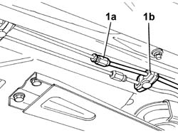

3340B62 RIGID PIPE (one), left or right, from hydraulic control unit to rear brakes - R.R.
- Path
- Procedures > 33 BRAKES > 3340 ANTI-LOCK BRAKING SYSTEM (A.B.S.) > 3340B ABS SYSTEM PIPES > 3340B62 RIGID PIPE (one), left or right, from hydraulic control unit to rear brakes - R.R.
- Kind
- repair procedure (removal / refitting; the operation number is the code)
- Applies to
- engines: 2.4 20V, 3.0 V6, 3.2 V6, 2.4 JTD 10V; all production periods
- Interactive page
- https://sloeber94.github.io/elrnDB-lThss/en/#/78681
Applies to: engines: 3.0 V6, 3.2 V6; all production periods
 Removing
Removing
 Refitting
RefittingSee in Op. 1048A48 HOSE BETWEEN RESONATOR AND THROTTLE CASING - R.R.
See in Op. 1048A28 vacuum air circuit resonator pipe - r+r
See in Op. 3340A12 A.B.S. hydraulic and electronic CONTROL UNIT - R.R. - Includes bleeding air
See in Op. 1076A48 Catalytic converter HEAT SHIELD - R.R.
See in Op. 1080B62 CATALYTIC CONVERTER - R.R.
See in Op. 4410D10 Front suspension FRAME - R.R.
- Proceed with removing the front suspension frame without dismantling the chassis components at the bench; carry out the appropriate operation.
1. Undo the connector (1a), remove the retaining bands (1b) and release the rigid pipe from the lower part of the engine.

Applies to: engines: 3.0 V6, 3.2 V6; all production periods
Refitting
Removing- Fit the rigid pipe, securing it to the floor of the vehicle using the retaining bands.
- Connect the connector joining the front section to the rear section.
 | Value - daNm | Fastening | Component | Ø |
|---|---|---|---|---|
. | 1.4 | Connector | BRAKING SYSTEM PIPE BRAKES | M10 |
See in Op. 1080B62 CATALYTIC CONVERTER - R.R.
See in Op. 1076A48 Catalytic converter HEAT SHIELD - R.R.
See in Op. 3340A12 A.B.S. hydraulic and electronic CONTROL UNIT - R.R. - Includes bleeding air
See in Op. 1048A28 vacuum air circuit resonator pipe - r+r
See in Op. 1048A48 HOSE BETWEEN RESONATOR AND THROTTLE CASING - R.R.
Applies to: engines: 2.4 20V, 2.4 JTD 10V; all production periods
Removing
RefittingSee in Op. 1048A48 HOSE BETWEEN RESONATOR AND THROTTLE CASING - R.R.
See in Op. 3340A12 A.B.S. hydraulic and electronic CONTROL UNIT - R.R. - Includes bleeding air
- Proceed with removing the front suspension frame without dismantling the chassis components at the bench; carry out the appropriate operation
1. Undo the connector (1a), remove the retaining bands (1b) and remove the rigid pipe from the lower part of the engine.
Applies to: engines: 2.4 20V, 2.4 JTD 10V; all production periods
Refitting
Removing- Fit the rigid pipe and secure it to the floor of the vehicle using the retaining bands.
- Connect the connector joining the front section to the rear section.
See in Op. 1048A48 HOSE BETWEEN RESONATOR AND THROTTLE CASING - R.R.
See in Op. 3340A12 A.B.S. hydraulic and electronic CONTROL UNIT - R.R. - Includes bleeding air
- Proceed with refitting the front suspension frame; carry out the appropriate operations
- Remove the vehicle from the lift.
Topics linked from this page (6)
- 1048A28 vacuum air circuit resonator pipe - r+r
- 1048A48 HOSE BETWEEN RESONATOR AND THROTTLE CASING - R.R.
- 1076A48 Catalytic converter HEAT SHIELD - R.R.
- 1080B62 CATALYTIC CONVERTER - R.R.
- 3340A12 A.B.S. hydraulic and electronic CONTROL UNIT - R.R. - Includes bleeding air
- 4410D10 Front suspension FRAME - R.R.